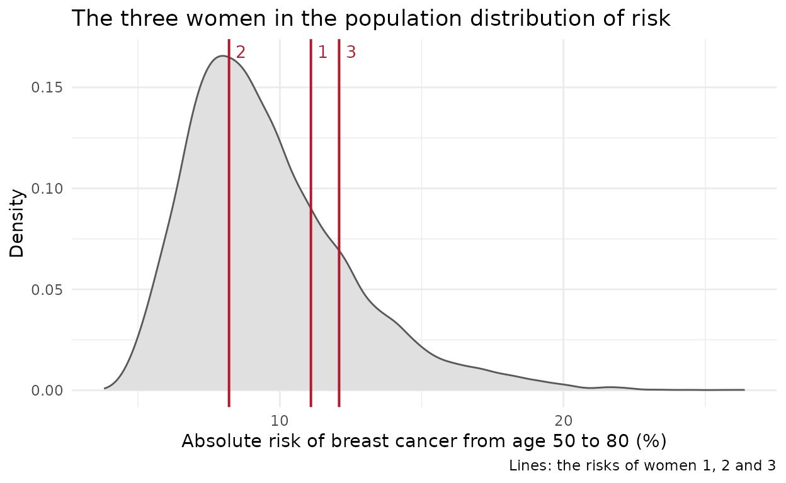

This vignette belongs to an unofficial, refactored distribution of iCARE. The official package is distributed by Bioconductor. The interface is the same;
vignette("differences", package = "iCARE")lists every difference.
What iCARE does
iCARE (Individualized Coherent Absolute Risk Estimation) estimates the absolute risk of a disease: the probability that a person who is free of the disease at age develops it before age , allowing for the possibility of dying of another cause first. A relative risk (“women with this profile have 1.5 times the average risk”) is hard to act on; an absolute risk (“a 4.2% chance of breast cancer in the next 10 years”) is what screening and prevention guidelines use.
An iCARE model is assembled from components that are usually estimated in different studies:
| Component | Arguments | Typical source |
|---|---|---|
| Relative risks of the risk factors |
model.formula,
model.cov.info, model.log.RR;
model.snp.info for SNPs |
cohort or case-control studies, genome-wide association studies |
| Distribution of the risk factors in the population |
model.ref.dataset (and
model.ref.dataset.weights) |
a survey representative of the population |
| Age-specific incidence of the disease | model.disease.incidence.rates |
a cancer registry, e.g. SEER |
| Age-specific mortality from other causes | model.competing.incidence.rates |
national vital statistics |
The hazard of the disease at age
for a person with risk factors
is
,
where
is the design-matrix row that model.formula makes from
and
are the log relative risks. The baseline hazard
is not supplied: iCARE calibrates it so that the average hazard of the
people still free of the disease at each age, in the reference
population, equals the population’s incidence rate. This is what makes
the model coherent: averaged over the population, it reproduces
the incidence it was built from. The absolute risk over
then accounts for the competing mortality
:
computed, as in all versions of iCARE, with rates that are constant within each year of age.
The example data
The package includes the inputs of a breast cancer risk model (13
classical risk factors and 72 SNPs), the incidence and mortality rates
of US women, a reference dataset, three women to apply the model to, and
two simulated validation studies. ?bc_data describes each
object.
library(iCARE)
data("bc_data", package = "iCARE")
bc_model_formula
#> diagnosis ~ famhist + as.factor(menarche_dec) + as.factor(parity) +
#> as.factor(birth_dec) + as.factor(agemeno_dec) + as.factor(height_dec) +
#> as.factor(bmi_dec) + as.factor(rd_menohrt) + rd2_everhrt_e +
#> rd2_everhrt_c + rd2_currhrt + as.factor(alcoholdweek_dec) +
#> as.factor(ever_smoke) + as.factor(rd_menohrt) * as.factor(bmi_dec)
head(ref_cov_dat, 3)
#> famhist menarche_dec parity birth_dec agemeno_dec height_dec bmi_dec
#> 12 0 8 4 1 1 2 8
#> 15 0 8 2 1 6 9 6
#> 36 0 3 2 2 10 6 2
#> rd_menohrt rd2_everhrt_e rd2_everhrt_c rd2_currhrt alcoholdweek_dec
#> 12 2 1 0 0 1
#> 15 1 0 0 0 1
#> 36 1 0 0 0 4
#> ever_smoke
#> 12 0
#> 15 1
#> 36 0
bc_inc[bc_inc[, 1] %in% seq(40, 80, by = 10), ] # age, annual incidence rate
#> [,1] [,2]
#> [1,] 40 0.00108921
#> [2,] 50 0.00234053
#> [3,] 60 0.00348621
#> [4,] 70 0.00447193
#> [5,] 80 0.00461647A model with classical risk factors
The 30-year risk, from age 50 to 80, of the three example women:
risk_factors <- computeAbsoluteRisk(
model.formula = bc_model_formula,
model.cov.info = bc_model_cov_info,
model.log.RR = bc_model_log_or,
model.ref.dataset = ref_cov_dat,
model.disease.incidence.rates = bc_inc,
model.competing.incidence.rates = mort_inc,
apply.age.start = 50,
apply.age.interval.length = 30,
apply.cov.profile = new_cov_prof,
return.refs.risk = TRUE
)
risk_factors
#> Absolute risks of 3 profiles
#>
#> Int_Start Int_End Risk_Estimate
#> 1 50 80 0.11094852
#> 2 50 80 0.08207015
#> 3 50 80 0.12089375
#> Profiles and risks: `$details`; risks: `$risk`.The result is a list:
-
risk: the absolute risks, one per profile; -
details: a data frame with each profile’s interval, risk and risk factors; -
beta.used: the log relative risks used; -
refs.risk: the risks of the women in the reference dataset over the same interval (becausereturn.refs.risk = TRUE), which show where a profile falls in the population; -
lps: the linear predictors , withreturn.lp = TRUE.
columns <- c("Int_Start", "Int_End", "Risk_Estimate", "famhist", "bmi_dec")
risk_factors$details[, columns]
#> Int_Start Int_End Risk_Estimate famhist bmi_dec
#> 1 50 80 0.11094852 0 10
#> 2 50 80 0.08207015 0 4
#> 3 50 80 0.12089375 0 10
summary(risk_factors$refs.risk)
#> Min. 1st Qu. Median Mean 3rd Qu. Max.
#> 0.03799 0.07515 0.09042 0.09599 0.11125 0.26394The three women against the population distribution of risk:
library(ggplot2)
women <- data.frame(risk = 100 * risk_factors$risk[, 1], label = 1:3)
ggplot(data.frame(risk = 100 * risk_factors$refs.risk), aes(risk)) +
geom_density(fill = "grey88", colour = "grey35") +
geom_vline(data = women, aes(xintercept = risk), colour = "#B2182B",
linewidth = 0.7) +
geom_text(data = women, aes(x = risk, y = Inf, label = label),
hjust = -0.6, vjust = 1.5, size = 3.6, colour = "#B2182B") +
labs(x = "Absolute risk of breast cancer from age 50 to 80 (%)",
y = "Density",
title = "The three women in the population distribution of risk",
caption = "Lines: the risks of women 1, 2 and 3") +
theme_minimal(base_size = 11)
plot() of a result draws the distribution of the
profiles’ risks, which is useful when the profiles are many (a cohort,
or the reference population itself).
Describing the relative-risk model
model.cov.info has one element per risk factor of
model.formula: its name, its type
("continuous" or "factor") and, for a factor,
all its levels and optionally its referent level
ref.
str(bc_model_cov_info[[3]])
#> List of 4
#> $ name : chr "parity"
#> $ type : chr "factor"
#> $ levels: chr [1:5] "1" "0" "2" "3" ...
#> $ ref : chr "0"model.log.RR holds one log relative risk per column of
the design matrix that the formula makes from the reference dataset,
named like those columns (any order). To see the names a formula
makes:
design_columns <- colnames(model.matrix(bc_model_formula,
cbind(diagnosis = 0, ref_cov_dat)))[-1]
head(design_columns)
#> [1] "famhist" "as.factor(menarche_dec)2"
#> [3] "as.factor(menarche_dec)3" "as.factor(menarche_dec)5"
#> [5] "as.factor(menarche_dec)8" "as.factor(menarche_dec)9"
all(design_columns %in% names(bc_model_log_or))
#> [1] TRUEA missing or extra name stops with a message that lists the expected names.
Incidence and mortality rates
Rates are annual rates by single year of age (a two-column table:
age, rate) or by age band (three columns: first age, last age, rate).
They must cover every year of age in the risk intervals; a gap is
reported with the ages concerned.
model.competing.incidence.rates = NULL ignores competing
mortality, which overstates risks at older ages.
The calibrated baseline hazard is kept with the result, with the mean relative risk of the women still free of breast cancer at each age:
calibration <- attr(risk_factors, "calibration")
calibration[calibration$age %in% seq(40, 80, by = 10), ]
#> age incidence.rate baseline.hazard expected.rr
#> 41 40 0.00108921 0.001166956 0.9333775
#> 51 50 0.00234053 0.002511930 0.9317655
#> 61 60 0.00348621 0.003752012 0.9291576
#> 71 70 0.00447193 0.004833605 0.9251750
#> 81 80 0.00461647 0.005013770 0.9207582Missing risk factors
Profiles may have missing risk factors (NA). For a
profile with observed risk factors
and missing ones
,
iCARE estimates
,
the risk averaged over the distribution of the missing risk factors in
people like her. The reference population is divided into 100 groups
(percentiles) of the linear predictor of the observed risk factors; the
woman’s own observed risk factors are completed with the missing values
of each reference person in her group, and the risks of these completed
profiles are averaged with the reference weights. Interactions between
an observed and a missing risk factor are evaluated on the completed
profiles. A profile with no observed risk factor gets the average risk
of the population.
For example, the first woman, with and without her body mass index:
woman <- new_cov_prof[c(1, 1), ]
woman$bmi_dec[2] <- NA
completed <- computeAbsoluteRisk(
model.formula = bc_model_formula, model.cov.info = bc_model_cov_info,
model.log.RR = bc_model_log_or, model.ref.dataset = ref_cov_dat,
model.disease.incidence.rates = bc_inc,
model.competing.incidence.rates = mort_inc,
apply.age.start = 50, apply.age.interval.length = 30,
apply.cov.profile = woman
)
data.frame(bmi_dec = woman$bmi_dec, risk = completed$risk[, 1])
#> bmi_dec risk
#> 1 10 0.11094852
#> 2 NA 0.09020983Adding SNPs
A polygenic component is added with model.snp.info: each
SNP’s name, per-allele odds ratio and risk-allele frequency.
head(bc_72_snps, 3)
#> snp.name snp.odds.ratio snp.freq
#> 1 rs616488 0.94 0.33
#> 2 rs11552449 1.04 0.17
#> 3 rs11249433 1.11 0.41iCARE simulates the genotypes of the reference population under
Hardy-Weinberg equilibrium (n.imp independent sets, 5 by
default). With model.bin.fh.name, the genotypes are
simulated given each person’s family history, and the family-history log
relative risk is attenuated by half the variance of the polygenic score,
because family history partly reflects the same genes. Because the
genotypes are simulated, results depend on the random number generator:
set the seed for reproducible results.
set.seed(50)
risk_snps <- computeAbsoluteRisk(
model.formula = bc_model_formula,
model.cov.info = bc_model_cov_info,
model.snp.info = bc_72_snps,
model.log.RR = bc_model_log_or,
model.ref.dataset = ref_cov_dat,
model.disease.incidence.rates = bc_inc,
model.competing.incidence.rates = mort_inc,
model.bin.fh.name = "famhist",
apply.age.start = 50,
apply.age.interval.length = 30,
apply.cov.profile = new_cov_prof,
apply.snp.profile = new_snp_prof
)
cbind(risk_factors = risk_factors$risk[, 1], with_snps = risk_snps$risk[, 1])
#> risk_factors with_snps
#> [1,] 0.11094852 0.10173346
#> [2,] 0.08207015 0.09031505
#> [3,] 0.12089375 0.16899913Missing genotypes (NA in apply.snp.profile)
are handled like missing risk factors; the first two women above have 5
and 6 missing genotypes. Without apply.snp.profile, all
SNPs are treated as missing.
A SNP-only model
Leave the covariate arguments out for a model of SNPs alone. Without
genotypes, the result is the population-average risk;
refs.risk then holds the risks of simulated people.
set.seed(50)
snp_only <- computeAbsoluteRisk(
model.snp.info = bc_72_snps,
model.disease.incidence.rates = bc_inc,
model.competing.incidence.rates = mort_inc,
apply.age.start = 50,
apply.age.interval.length = 30,
apply.snp.profile = new_snp_prof,
return.refs.risk = TRUE
)
snp_only$risk
#> Risk_Estimate
#> [1,] 0.08824847
#> [2,] 0.10525072
#> [3,] 0.13456294
quantile(snp_only$refs.risk, c(0.05, 0.5, 0.95))
#> 5% 50% 95%
#> 0.05602454 0.09167161 0.15101013Different intervals for different people
apply.age.start and
apply.age.interval.length take one value for all profiles
or one per profile, and fractional ages are used exactly (the fraction
of a year of age is weighted by the time spent in it):
by_age <- computeAbsoluteRisk(
model.formula = bc_model_formula, model.cov.info = bc_model_cov_info,
model.log.RR = bc_model_log_or, model.ref.dataset = ref_cov_dat,
model.disease.incidence.rates = bc_inc,
model.competing.incidence.rates = mort_inc,
apply.age.start = c(45, 52.5, 60),
apply.age.interval.length = c(5, 7.5, 10),
apply.cov.profile = new_cov_prof
)
by_age$details[, c("Int_Start", "Int_End", "Risk_Estimate")]
#> Int_Start Int_End Risk_Estimate
#> 1 45.0 50 0.01148858
#> 2 52.5 60 0.01731906
#> 3 60.0 70 0.04954741A model that changes with age
Relative risks often differ before and after menopause.
computeAbsoluteRiskSplitInterval() uses one model before a
cut age and another after it. With
the risk before the cut age
,
the probability of reaching
alive and free of the disease, and
the risk from
on, the risk over the whole interval is
.
split <- computeAbsoluteRiskSplitInterval(
model.formula = bc_model_formula,
model.cov.info = bc_model_cov_info,
model.log.RR = bc_model_log_or,
model.log.RR.2 = bc_model_log_or_post_50,
model.ref.dataset = ref_cov_dat,
model.ref.dataset.2 = ref_cov_dat_post_50,
model.disease.incidence.rates = bc_inc,
model.competing.incidence.rates = mort_inc,
apply.age.start = 40,
apply.age.interval.length = 40,
cut.time = 50,
apply.cov.profile = new_cov_prof
)
split
#> Absolute risks of 3 profiles
#>
#> Int_Start Cut_Age Int_End Risk_Estimate
#> 1 40 50 80 0.12393471
#> 2 40 50 80 0.08796538
#> 3 40 50 80 0.13718498
#> Profiles and risks: `$details`; risks: `$risk`.Arguments ending in .2 describe the model after the cut
age; those left out are taken from the model before it.
Weighted reference samples
When the reference dataset is a survey sample with unequal selection
probabilities, give the survey weights in
model.ref.dataset.weights. They are used to calibrate the
baseline hazard and to average over the reference population for missing
risk factors.
Next steps
-
vignette("model-validation", package = "iCARE"): validating a model in a cohort or a nested case-control study; -
vignette("differences", package = "iCARE"): how this distribution differs from the official one; -
vignette("performance", package = "iCARE"): timings; - the help pages, e.g.
?computeAbsoluteRisk.
Reference
Pal Choudhury P, Maas P, Wilcox A, et al. (2020). iCARE: An R package to build, validate and apply absolute risk models. PLoS ONE 15(2): e0228198. https://doi.org/10.1371/journal.pone.0228198